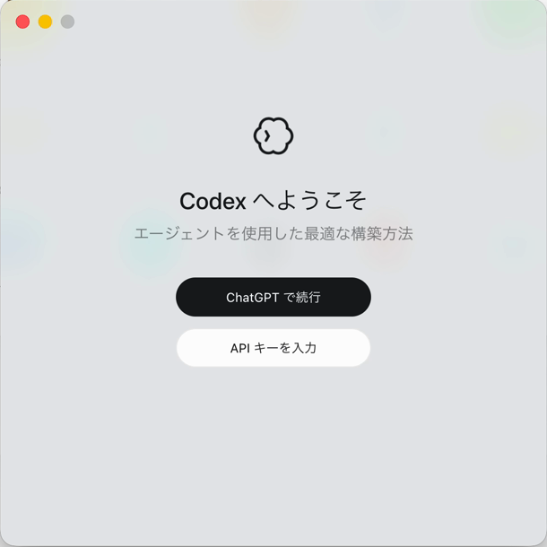
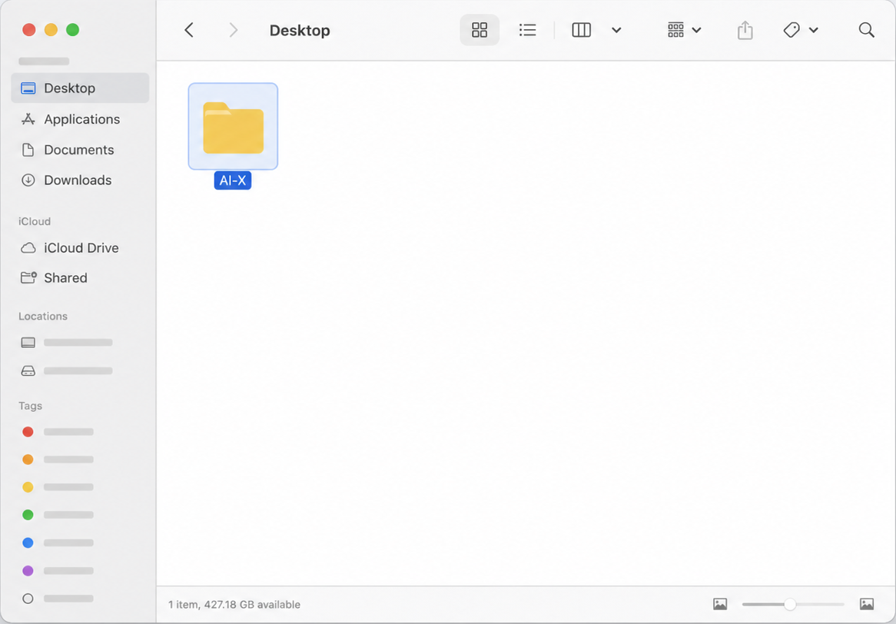
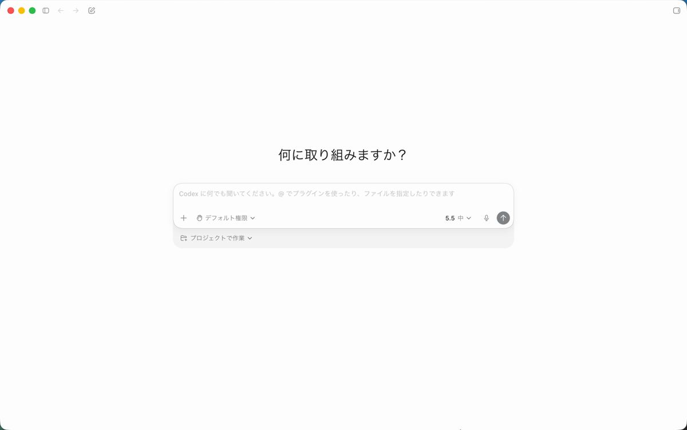
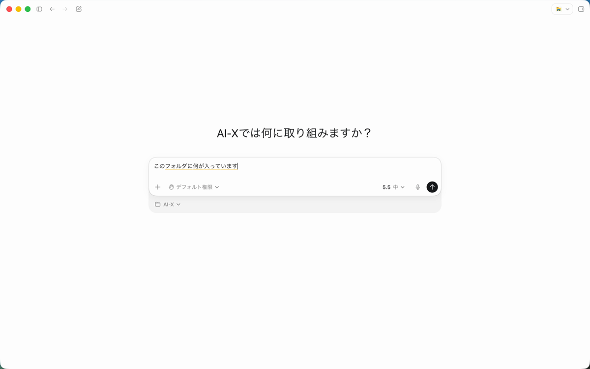
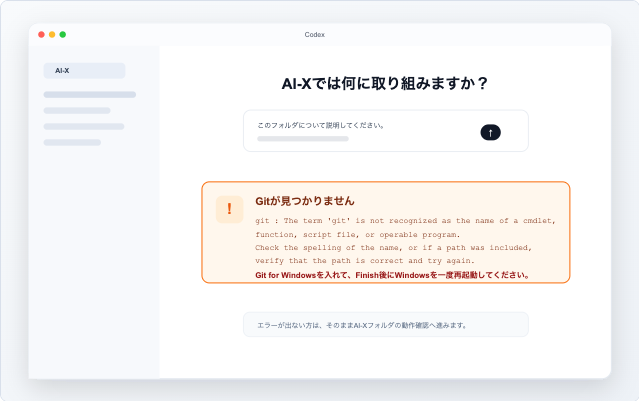
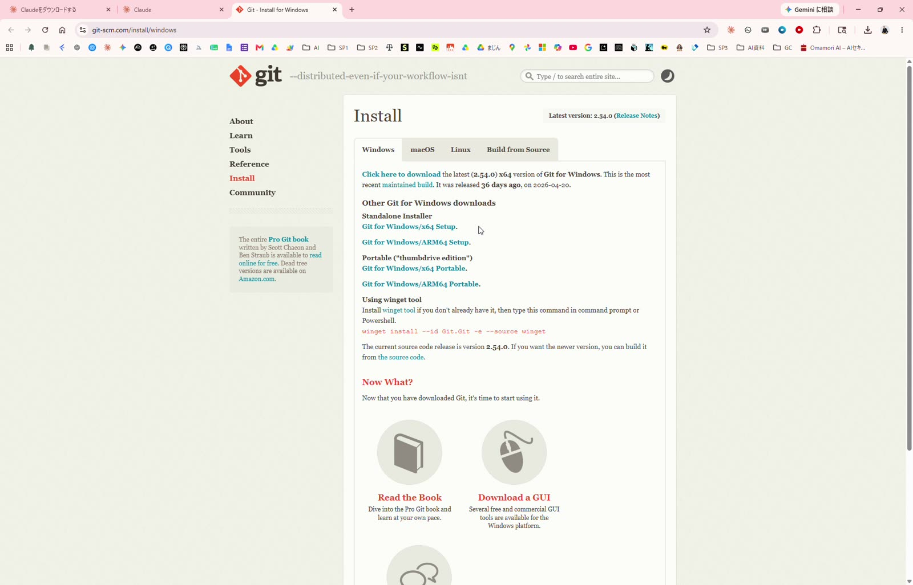

AI-X講座にお申し込みの皆様へ
Codexデスクトップアプリを事前に準備してください
講座当日はCodexの画面を使って進めます。ChatGPTにログインできる状態にして、MacまたはWindowsにCodexデスクトップアプリをインストールし、練習用フォルダで動作確認まで済ませておいてください。最低限、このCodexの準備までは講座前に済ませます。
当日の説明画面はCodexを基準にします。時間に余裕がある方は、Codex側の確認が終わったあとにClaude Codeインストールガイドへ進み、Claude Code側も同じ AI-X フォルダで動作確認してください。
事前確認
ChatGPTアカウント
ChatGPTの有料版を使っている方は、そのアカウントでCodexを利用できます。無料版でも現在はCodexを利用できる案内がありますが、利用上限や提供状況が変わる可能性があります。
無料版で参加予定の方は、講座前に必ずCodexデスクトップアプリでログインし、動作確認まで済ませてください。
2
Applicationsフォルダへ入れる
ダウンロードしたファイルを開き、Codex.appをApplicationsフォルダへドラッグします。

3
Codexが入ったことを確認する
ApplicationsフォルダにCodex.appが入っていればインストール完了です。

4
Codexを開き、ChatGPTアカウントでサインインする
初回はサインイン画面が表示されます。「ChatGPTで続行」を押し、講座で使うChatGPTアカウントでサインインしてください。

5
AI-Xフォルダを作る
Finderでデスクトップを開き、新規フォルダを作成して、名前を AI-X にします。

6
練習用フォルダを選ぶ
先ほど作った AI-X フォルダをプロジェクトとして選びます。

7
最初の依頼を送る
プロジェクトを選んだら、下の文章を送ってみてください。
このフォルダについて説明してください。まだ何もなければ、空のフォルダだと教えてください。
8
返答とファイル作成を確認する
フォルダの中身を確認する返答が出たら、次にメモファイルの作成を頼みます。作成されたファイルが表示されれば動作確認は完了です。
講座受講用のメモファイルを作成しておいて

ここまで続けてください
動作確認ができたら、必ず「ブラウザ使用（Browser Use）」と「コンピューターの使用（Computer Use）」の準備まで進めてください。下の設定で場所と使い方を確認できます。
Windows
Windows版セットアップ
Windowsをご利用の方は、Windows版のCodexをインストールし、ChatGPTアカウントでサインインします。

2
Codexをインストールする
ダウンロード後、画面の案内に従ってCodexをインストールします。Windowsの確認画面が出た場合は、内容を確認して進めてください。
3
Codexを開き、ChatGPTアカウントでサインインする
初回はサインイン画面が表示されます。メールアドレス、Googleアカウント、Microsoftアカウントなど、ChatGPTで使っている方法を選んでください。

4
サインイン完了を確認する
ブラウザに「Signed in to Codex」と表示されたら、タブを閉じてCodexアプリに戻ります。

5
AI-Xフォルダを作る
エクスプローラーでデスクトップを開き、右クリックから「新規作成」→「フォルダー」を選んで、名前を AI-X にします。

6
Gitエラーが出るか確認する
Codexで AI-X フォルダを開いたあと、Gitに関するエラーや案内が出る場合があります。表示された方だけ7へ進みます。何も出ていない方、すでにGitが入っている方は7を飛ばして8へ進んでください。
確認ポイント: 「git が認識されない」「Gitが見つからない」などの表示が出た方だけGitを入れます。

7
必要な人だけGitを入れて再起動する
GitエラーやGitの案内が出た方は、Git for Windows公式ページからインストーラーをダウンロードします。
- 基本的には Standalone Installer の「Git for Windows/x64 Setup」を選ぶ
- インストーラーは基本設定のままNextで進める
- 最後にFinishを押す
- Windowsを一度再起動する
- 再起動後、Codexを開き直して作業を続ける
必ず再起動: Gitを新しく入れた方は、Finishまで完了したあとWindowsを一度再起動してください。再起動後にCodexを開き直します。

8
練習用フォルダで動作確認する
Codexで AI-X フォルダをプロジェクトとして選びます。
次の2つを順番に試してください。
このフォルダについて説明してください。まだ何もなければ、空のフォルダだと教えてください。講座受講用のメモファイルを作成しておいて
ここまで続けてください
動作確認ができたら、必ず「ブラウザ使用（Browser Use）」と「コンピューターの使用（Computer Use）」の準備まで進めてください。下の設定で場所と使い方を確認できます。
インストール後の設定
Browser Use / Computer Useを準備する
Codexには、Webページを見ながら作業する「ブラウザ使用（Browser Use）」と、他のアプリ画面を操作する「コンピューターの使用（Computer Use）」があります。動作確認まで終わった方は、左下の設定から場所と使い方を確認しておきましょう。
9
ブラウザ使用（Browser Use）
CodexがWebページを確認しながら作業するための設定です。画面の「インストール」からブラウザ機能の準備を進めておきます。
承認は「常に確認」にしておくのがおすすめです。許可するWebサイトは必要なものだけにしてください。

10
コンピューターの使用（Computer Use）
Codexが他のアプリ画面を見たり、クリックや入力を手伝ったりするための設定です。
Macでは画面収録とアクセシビリティの許可を求められることがあります。Windowsで項目が見当たらない場合は、今回はスキップして大丈夫です。

公式の参考情報
Windowsでうまくいかない時
よくあるつまずきと対処
まずはアプリの再起動、サインインし直し、別のネットワークでの確認を試してください。設定変更が必要そうな場合は、無理に進めずスクリーンショットを共有してください。
ダウンロードや起動で止まる
Microsoft StoreからCodexを開けない、または起動直後に止まる場合は、Storeの「ダウンロード」画面で更新を確認し、Codexを再起動してください。
サインイン画面が白い、または通信エラーが出る
VPN、プロキシ、セキュリティ系の通信フィルターが影響することがあります。Codexを再起動し、必要に応じて別の回線でも試してください。
「Working」のまま進まない
30〜60秒待っても変わらない場合は、作業を止めて新しいスレッドで短い依頼からやり直してください。最初はフォルダ説明だけで十分です。
PowerShellの実行エラーが出る
「running scripts is disabled」のような表示は、Windowsの実行ポリシーでコマンドが止まっている状態です。講座前準備では設定を変えず、画面を共有してください。
WindowsでGitエラーが出る
「git が認識されない」「Gitが見つからない」などの表示が出た方だけ、Git for Windowsを入れます。Finish後は必ずWindowsを再起動し、Codexを開き直してください。
Gitを入れたのに認識しない
まずWindowsを再起動します。それでも変わらない場合は、Codexを終了してから開き直し、表示されたエラー画面を保存してください。
管理者権限を求められる
会社や学校のPCでは、インストールや一部の操作に管理者権限が必要な場合があります。自分で変更できない場合は、PCの管理者に確認してください。
利用上限の表示が出る
無料版や利用量が多い場合は、Codexの上限に当たることがあります。時間を置いて再度試すか、講座前にログインと最初の動作確認だけ済ませてください。
Windowsの詳しいエラー画面を確認する
サンドボックス、権限、Storeの不明なエラーなどは、再現画像付きの別ページにまとめています。
最後に確認
チェックリスト
最低限、Codex側の動作確認まで終わっているか確認します。
できれば追加で
Claude Codeも準備しておく
最低限はCodexの準備で大丈夫です。時間に余裕がある方は、Claude Codeもダウンロードしてセットアップしておくと、講座後の復習や比較がしやすくなります。
エラーが出た場合
講座前に共有するもの
その他のエラーが出た場合は、エラー画面のスクリーンショットを撮って保存しておいてください。
- Mac / Windowsどちらか
- エラー画面のスクリーンショット
- 止まった手順
- WindowsでGitを入れたか、再起動したか
- 表示されたエラーメッセージ
注意
初回練習はダミー資料で
初回練習では、実際の顧客情報・個人情報・社外秘資料は使わないでください。まずは練習用フォルダやダミー資料で動作確認をしてください。